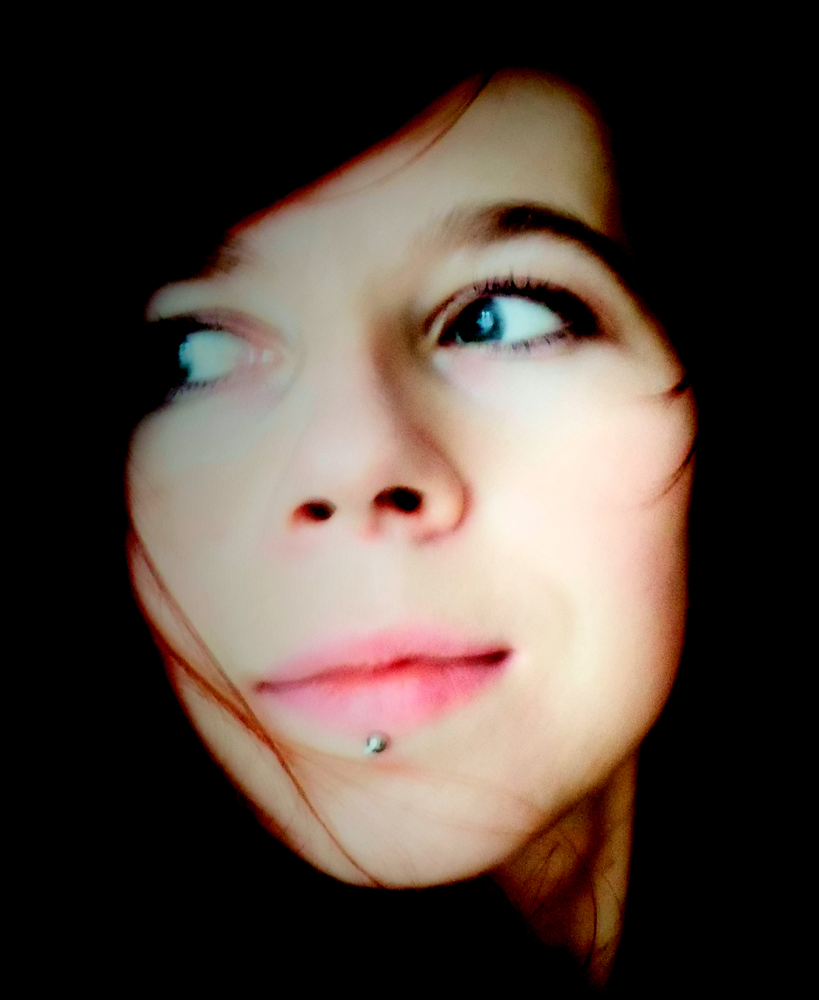

Leita.cz
Leita

is a young Czech artist living in Prague,
working mainly with oil colors, she is also interested in multimedia technologies.
In her childhood she was amazed by the world of fine art
and this strong impression also shaped her decision to became a painter.
Taking inspiration from great artists as Dali,Bacon,Gauguin etc. unleashed her creativity,
allowing her to experiment with her own way of expression.
She is fascinated primarily by human figure and more by inner human world.
Although her motifs in paintings are different ( portraits of musicians , elements and rituals
, wild life...), in conclusion all of them are capturing the moments of deep immersion,
rapture or revelation. These mentioned themes stream trough her work with certain
tranquility and timelessness as a mirror of her intimate experiences.
Leitá often describes her creative work more as alchemy than painting.
Her canvas
becomes a melting pot filled with colors, shapes, found photographs, memories and insights,
all connected in an effective contrast which gives her paintings intensity.
In the past she organized three exhibitions in Brno, two of them at
Skleněná louka ( The twelve, Tibet ) and at the café Anděl ( The garden of the soul ).